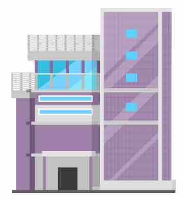

LES ZES:
LES ZES:
1.) Deze deur:
de deur
Dit is een deur.
Deze deur is zwart.
2.) Deze deuren:
de deuren
Dit zijn twee deuren.
Deze deuren zijn zwart.
3.) Deze boom:
de boom
Dit is een boom.
Deze boom is groen.
4.) Deze bomen:
de bomen
Dit zijn bomen.
Deze bomen zijn groen.
5.) Deze boot:
de boot
Dit is een boot.
Deze boot is blauw.
6.) Deze boten:
de boten
Dit zijn boten.
Deze boten zijn blauw.
7.) Deze auto:
de auto
Dit is een auto.
Deze auto is rood.
8.) Deze auto's:
de auto's
Dit zijn auto's.
Deze auto's zijn rood.
Kleuren
groen
blauw
rood
wit
zwart
geel
De-sózlarga "deze" sózi ishlatiladi:
de deur
de trein
deze deur
deze trein
Het-sózlarga ham "deze" ni ishlatsa bóladimi?
9.) Dit gebouw:

het gebouw
Dit is een gebouw.
Dit gebouw is groot.
Dit gebouw is klaar.
10.) Dit huis:

het huis
Dit is een huis.
Dit huis is klein.
Dit huis is niet klaar.
Demak het-sózlarga "deze" ni emas, "dit" ni ishlatasiz:
het huis
het kind
dit huis
dit kind
Taqqoslang:
"Man" sózi de-sóz.
"Deze man is 40 jaar."
"Kind" sózi het-sóz.
"Dit kind is 4 jaar."
De bouwplaats
Er is een huis. Het huis staat op de grond. Het is nog niet klaar.
Er zijn twee vakmannen. Ze staan voor het huis. Een vakman is aan de rechterkant. De tweede vakman is aan de linkerkant.
Er is een schop op de foto. En er zijn bakstenen.
| Vragen: | |
| ~ | Waar staat het huis? |
| ~ | Het huis staat op de grond. |
| ~ | Waar staan de vakmannen? |
| ~ | De vakmannen staan voor het huis. |
| ~ | Waar staat de eerste vakman? |
| ~ | Hij staat aan de rechterkant. |
| ~ | Waar staat de tweede vakman? |
| ~ | Hij staat aan de linkerkant. |
| ~ | Is er een schop op deze foto? |
| ~ | Ja, er is een schop op deze foto. |
| ~ | Zijn er bakstenen op deze foto? |
| ~ | Ja, er zijn bakstenen op deze foto. |
Nieuwe woorden:
| groen | yashil |
| blauw | kók |
| rood | qizil |
| klaar | tayyor / bitgan |
| grond | yer |
| nog | hali |
| staan | turmoq |
| voor | oldida |
| rechterkant | óng tarafda |
| linkerkant | chap tarafda |
| schop | kurak |
| bakstenen | g'ishtlar |